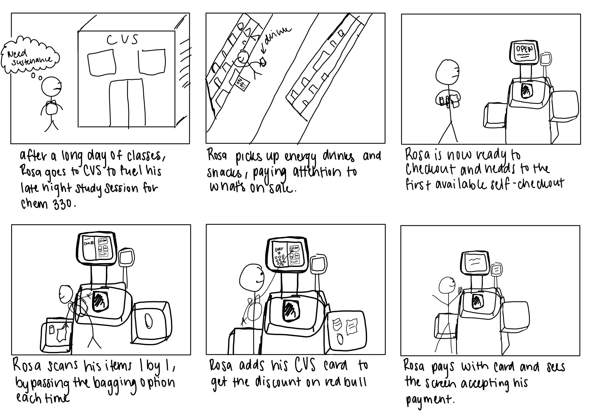

Overview
The goal of this assignment was to step into a user's shoes. I observed real users interacting with an
interface, interviewed these individuals about their experiences, created personas based on these users, and
illustrated a storyboard for one of these personas.
Preparation
Selecting an Interface
I chose the CVS pharmacy self checkout kiosk as my interface for observation. This is an interface that I
interact with on a fairly frequent basis, so I've exoperience just about every problem it has to offer.
Self checktout interfaces also tend to have a wide variety of users which makes them a perfect subject to
observe.
Interview Questions
In order to effectively create these personas, I needed to craft stimulating yet objective questions for
users regarding their experiences with the interface:
- How many items did you purchase and what were they?
- Have you ever used a self-checkout before?
- Did you find this more convenient than regular checkout? Why or why not?
- Did you use any paper coupons?
- Did you experience any difficulties scanning your items?
- How old are you?
- Do you have a CVS card? If so, were there any issues aplying your benefits?
Interface Sketches
Next, I created two hand drawn sketches that annotate the key interactive components of the kiosk.

Sketch of the entire body of the physical system

Sketch of the various screens in the interface in order of operation
Recording Observations
Observing Users
I observed 3 people using the interface. During this phase, I paid careful attention to how each user
interacted with the interface and made objective observations about their actions. This is a summary of key
interactions I noticed:
- Users with larger items often search around for a handheld barcode scanner
-
Some users experienced confusion after entering their cvs account number because the discounts were not
applied immediately
- Confusion on where to place items that were already scanned
- Confusion on which button to hit for payment
- Some users had to spend a few moments searching for the barcode on their item before scanning
- General confusion after scanning items because of the skip bagging prompt
Interviewing Users
After making my initial observations, I personally interviewed these users with the questions I created to
build material to create my personas. This is a summary of the interview responses:
- How many items did you purchase and what were they?
- Snacks & general food items
- Medicine
- Around 5 or less items
- Have you ever used a self-checkout before?
- All participants answered yes
- Did you find this more convenient than regular checkout? Why or why not?
- Yes, because I avoided speaking to the cashier
- Yes, I can control the speed at which I checkout
- No, issues with the interface delayed my checkout
- Yes, the self-checkout was already open whereas there was no available cashier
- Did you use any paper coupons?
- All participants answered no
- Did you experience any difficulties scanning your items?
- Yes, scanning larger items was difficult without a handheld scanner. I had to lift it up.
- The weight sensor was annoying, it slowed down my process
- How old are you?
- Generally late teens to early 20s (it's a college town)
- Do you have a CVS card? If so, were there any issues aplying your benefits?
- Yes, I do. I didn't experience any issues
- Yes, I do. I was confused when my discounts weren't applied immediately. I had to completely checkout before they showed up.
Personas
The next step in analyzing this interface was to take the data I collected from my observations and
interviews and use it to create two personas. The personas are be based on overarching trends I observed
amongst all the users I interviewed, not characteristics from a specific individual. Below are the empathy maps
I used to construct these personas:
Storyboard
Finally, I used one of my personas to create a storyboard for this hypothetical user. This storyboard is
intended to reflect the goals of the persona and include the necessary steps for using the CVS self checkout
interface

Takeaways
This assignment really helped me understand how to get into the mind of a user when designing a product.
Knowing your audience is key to designing effective products, and the idea of creating an empathy map allows
you to personify this hypothetical audience!